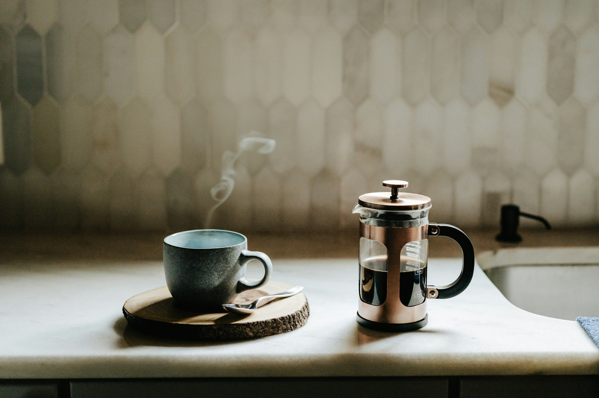

Teknik V60 (Pour Over)
Teknik ini menonjolkan rasa buah dan keasaman yang segar dari biji kopi.
Bilas kertas penyaring dengan air panas untuk membuang bau kertas, lalu masukkan 15 gram kopi giling sedang (seperti garam dapur).
Tuang 30ml air panas secara perlahan. Tunggu 30 detik agar gas dalam kopi keluar. Kopi akan terlihat mengembang.
Lanjutkan menuang air secara melingkar hingga mencapai total 225ml. Tunggu air turun semua, dan kopi siap dinikmati!

Teknik French Press
Cara paling mudah untuk mendapatkan kopi yang tebal dan kaya rasa di rumah.
Masukkan 20 gram kopi dengan gilingan kasar (sebesar gula batu kecil) ke dalam tabung kaca.
Tuang 300ml air panas. Aduk sedikit agar semua bubuk kopi basah. Pasang tutupnya (jangan ditekan dulu), dan diamkan selama 4 menit.
Tekan tuas perlahan hingga ampas kopi terdorong ke dasar. Tuang kopi ke cangkir dan segera nikmati.